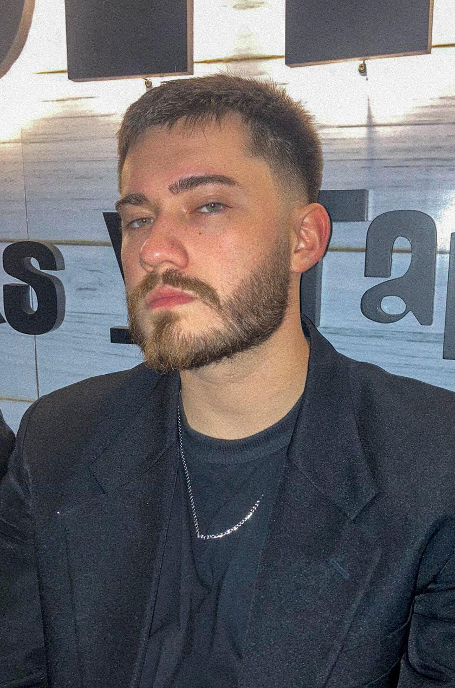

Olá! Sou Matheus Mattesco Desenvolvedor Fullstack
Desenvolvedor full-stack com experiência em desenvolvimento de aplicação web e projetos de Inteligência Artificial. Sou apaixonado por criar soluções tecnológicas que resolvem problemas reais e que agregam valor aos usuários.
Saiba Mais!
